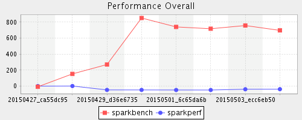
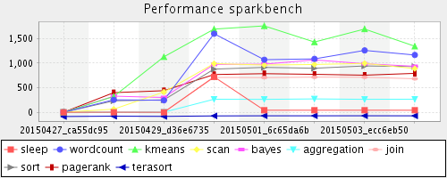
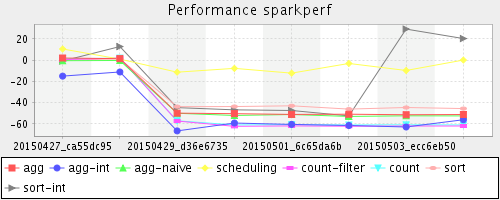
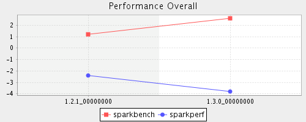
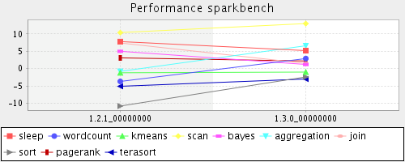
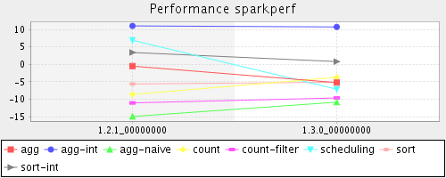

Apache Spark Performance
Description
Each data point represents each workload runtime percent compared with the previous week. Different lines represents different workloads running on spark yarn-client mode.
Hardware
CPU type: Intel(R) Xeon(R) CPU E5-2697 v2 @ 2.70GHz
Memory: 192GBMb
Disk Type: HDD
Number of HDD disk: 8
Disk size: 1TB
Disk controller: SATA
Software
JAVA version: 1.8.0_25
Hadoop version: 2.2.0
HiBench version: 3.0
Spark on yarn-client mode
Cluster
1 node for Master
10 nodes for Slave
Regular
Summary
The lower percent the better performance.
Group 20150427 20150428 20150429 20150430 20150501 20150502 20150503 20150504
sparkbench -8.6% 152.6% 269.7% 851.6% 740.0% 717.3% 757.4% 696.8% sparkperf -0.2% 1.1% -47.5% -47.8% -48.4% -48.7% -39.3% -38.4%

Detail
sparkbench
JOB
20150427
20150428
20150429
20150430
20150501
20150502
20150503
20150504
commit
ca55dc95
998aac21
d36e6735
c0c0ba6d
6c65da6b
37537760
ecc6eb50
f4af9255
sleep
-0.3%
0.3%
-0.3%
720.3%
41.6%
41.7%
41.9%
41.1%
wordcount
0.2%
254.1%
243.4%
1597.0%
1069.2%
1085.1%
1258.0%
1164.3%
kmeans
0.2%
320.2%
1127.6%
1690.9%
1756.4%
1428.5%
1692.0%
1342.9%
scan
0.1%
63.3%
411.4%
989.6%
961.0%
971.8%
994.2%
888.0%
bayes
-0.1%
327.6%
301.0%
973.5%
978.3%
1065.1%
987.7%
935.1%
aggregation
1.2%
0.5%
1.8%
265.1%
262.5%
271.7%
263.3%
265.9%
join
-0.6%
8.2%
4.8%
708.5%
705.1%
714.0%
712.2%
681.8%
sort
-0.3%
232.5%
251.7%
877.7%
912.6%
895.6%
941.8%
929.7%
pagerank
0.0%
398.7%
438.9%
767.3%
784.7%
771.3%
754.3%
790.8%
terasort
-86.2%
-79.7%
-83.8%
-73.9%
-71.8%
-71.7%
-71.1%
-71.9%
Comments: null means no such workload running or workload failed in this time.

sparkperf
JOB
20150427
20150428
20150429
20150430
20150501
20150502
20150503
20150504
commit
ca55dc95
998aac21
d36e6735
c0c0ba6d
6c65da6b
37537760
ecc6eb50
f4af9255
agg
2.0%
1.4%
-49.8%
-50.3%
-51.0%
-50.8%
-51.3%
-51.1%
agg-int
-15.0%
-11.1%
-66.5%
-59.1%
-60.4%
-61.4%
-62.8%
-56.0%
agg-naive
-0.5%
-0.3%
-49.9%
-52.0%
-51.1%
-52.9%
-52.3%
-52.4%
scheduling
10.5%
1.0%
-11.3%
-7.7%
-12.2%
-3.1%
-9.7%
0.1%
count-filter
0.5%
2.0%
-57.2%
-62.2%
-61.8%
-62.1%
-61.9%
-61.9%
count
1.3%
1.9%
-57.0%
-60.9%
-60.7%
-60.9%
-60.8%
-60.9%
sort
0.0%
1.2%
-43.7%
-43.6%
-42.9%
-46.0%
-44.5%
-45.5%
sort-int
-0.8%
12.8%
-44.6%
-46.7%
-47.3%
-52.4%
29.2%
20.3%
Comments: null means no such workload running or workload failed in this time.

Release
Summary
The lower percent the better performance.
Group 1.2.1 1.3.0
sparkbench 1.2% 2.6% sparkperf -2.4% -3.8%

Detail
sparkbench
JOB
1.2.1
1.3.0
sleep
7.8%
5.2%
wordcount
-3.7%
2.9%
kmeans
-1.2%
-1.0%
scan
10.4%
13.0%
bayes
5.0%
1.2%
aggregation
-0.8%
6.6%
join
7.4%
1.5%
sort
-10.8%
-2.4%
pagerank
3.1%
2.2%
terasort
-5.1%
-3.0%
Comments: null means no such workload running or workload failed in this time.

sparkperf
JOB
1.2.1
1.3.0
agg
-0.5%
-5.2%
agg-int
11.0%
10.7%
agg-naive
-14.9%
-10.8%
count
-8.6%
-3.7%
count-filter
-11.0%
-9.6%
scheduling
6.9%
-7.1%
sort
-5.6%
-5.1%
sort-int
3.4%
0.8%
Comments: null means no such workload running or workload failed in this time.
